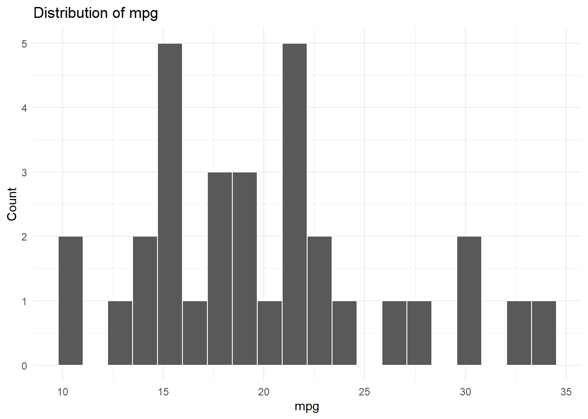
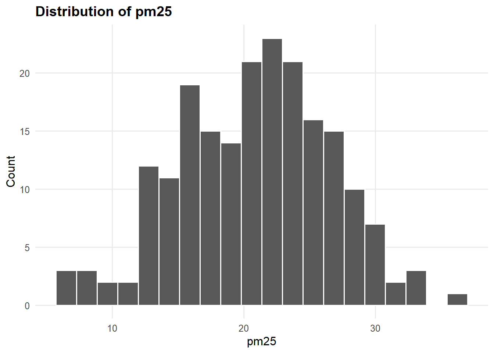
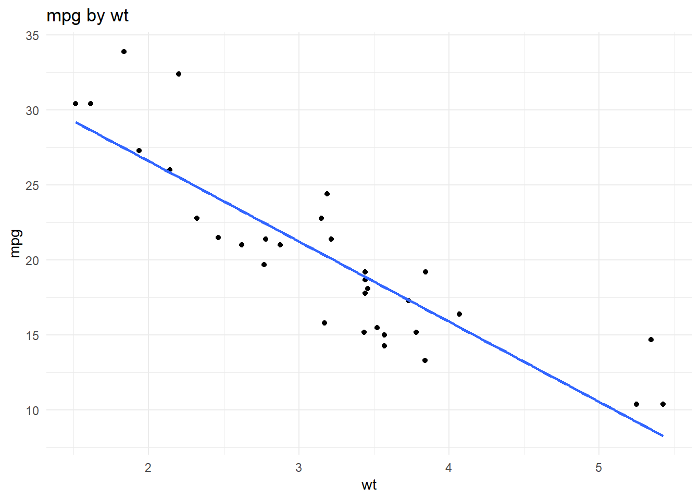
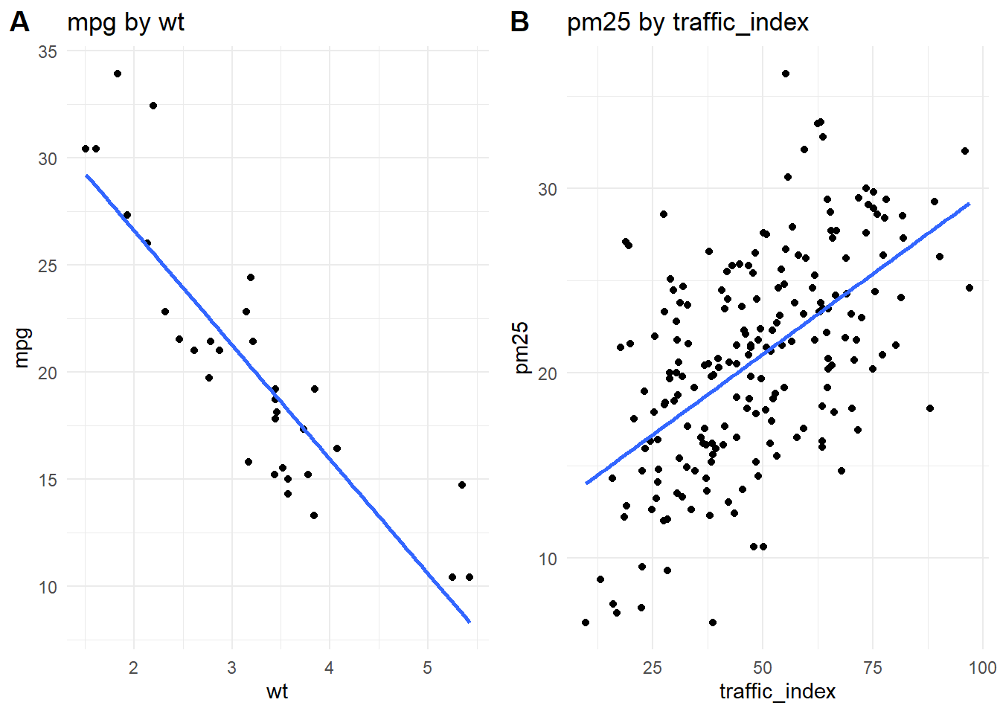
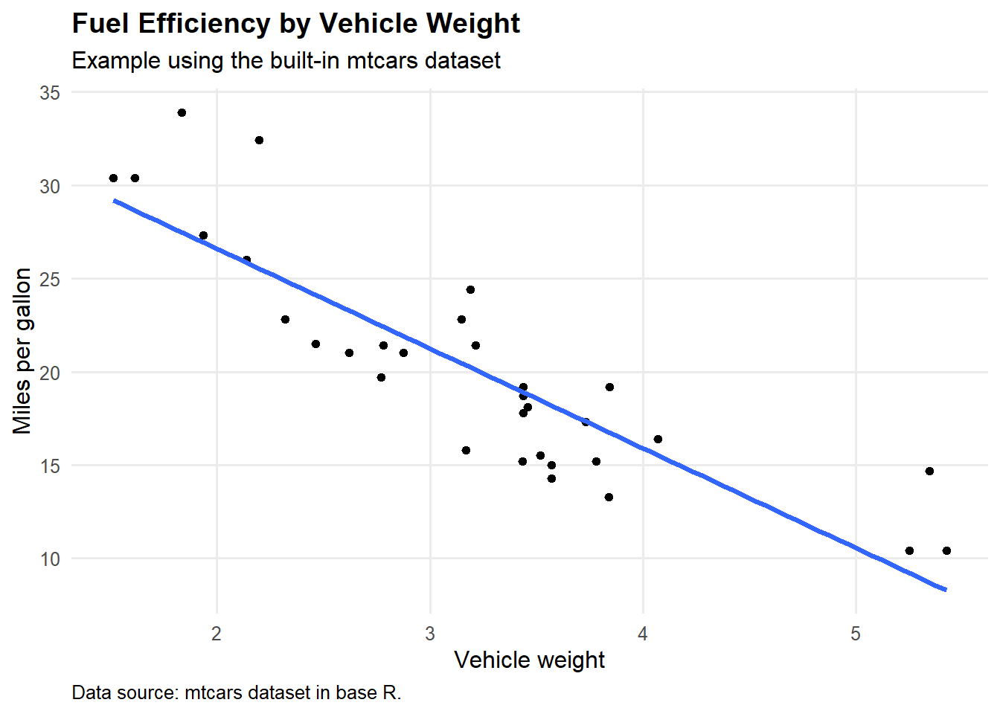

The projects should be numbered consecutively (i.e., in the order in which you began them), and should include for each project a description of the goal, the product (computer program, hand graph, computer graph, etc.), the data, and some interpretation. Reports must be reproducible and of high quality in terms of writing, grammar, presentation, etc.
This template shows how to source code from an R script, and how to
include the output in the report. The code is in
p02/scripts/script.R, and the output is included below.
This example demonstrates how to use source() to load
reusable R functions from a separate script.
In this template, the sourced script is located here:
script_path <- "p02/scripts/scripts.R"
script_path## [1] "p02/scripts/scripts.R"The script contains functions for:
The function source() runs the R script and loads the
functions from that script into the current R session.
source(script_path)After this code runs, the functions from
theme_functions.R are available in this R Markdown
document.
This example uses the built-in mtcars dataset as well as
data in the data folder of the template. The data()
function loads the mtcars dataset. The
read.csv() function loads the data from the CSV file.
data(mtcars)
head(mtcars)## mpg cyl disp hp drat wt qsec vs am gear carb
## Mazda RX4 21.0 6 160 110 3.90 2.620 16.46 0 1 4 4
## Mazda RX4 Wag 21.0 6 160 110 3.90 2.875 17.02 0 1 4 4
## Datsun 710 22.8 4 108 93 3.85 2.320 18.61 1 1 4 1
## Hornet 4 Drive 21.4 6 258 110 3.08 3.215 19.44 1 0 3 1
## Hornet Sportabout 18.7 8 360 175 3.15 3.440 17.02 0 0 3 2
## Valiant 18.1 6 225 105 2.76 3.460 20.22 1 0 3 1portfolio_data <- read.csv("p02/data/portfolio_example_data.csv")The function summarize_numeric() comes from the sourced
script.
summarize_numeric(
data = mtcars,
variable = "mpg"
)## variable mean standard_deviation minimum median maximum
## 1 mpg 20.09062 6.026948 10.4 19.2 33.9The same function can be reused for a different variable.
summarize_numeric(
data = mtcars,
variable = "wt"
)## variable mean standard_deviation minimum median maximum
## 1 wt 3.21725 0.9784574 1.513 3.325 5.424Or a different dataset.
summarize_numeric(portfolio_data, "temperature_f")## variable mean standard_deviation minimum median maximum
## 1 temperature_f 66.864 12.64044 26.2 67.25 115.1summarize_numeric(portfolio_data, "pm25")## variable mean standard_deviation minimum median maximum
## 1 pm25 20.755 5.771449 6.5 21 36.2The function make_histogram() creates a histogram for a
selected variable.
make_histogram(
data = mtcars,
variable = "mpg"
)
make_histogram(portfolio_data, "pm25")The plot can also be modified after the function creates it.
make_histogram(portfolio_data, "pm25") +
theme_portfolio()
The function make_scatterplot() creates a scatterplot
using two variables.
p1 <- make_scatterplot(
data = mtcars,
x_variable = "wt",
y_variable = "mpg"
)
p1
We can compare the scatterplot from the mtcars dataset
to a scatterplot from the portfolio_data dataset, using
Cowplot to arrange them side by side.
library(cowplot)
p2 <- make_scatterplot(
data = portfolio_data,
x_variable = "traffic_index",
y_variable = "pm25"
)
cowplot::plot_grid(p1, p2, labels = c("A", "B"))
The sourced function gives us a basic plot. We can then add other sourced functions to modify it.
scatterplot <- make_scatterplot(
data = mtcars,
x_variable = "wt",
y_variable = "mpg"
)
scatterplot <- add_portfolio_labels(
plot = scatterplot,
title = "Fuel Efficiency by Vehicle Weight",
subtitle = "Example using the built-in mtcars dataset",
x = "Vehicle weight",
y = "Miles per gallon",
caption = "Data source: mtcars dataset in base R."
)
scatterplot + theme_portfolio()
The function fit_simple_regression() fits a linear
regression model using variable names supplied as text.
mpg_model <- fit_simple_regression(
data = mtcars,
outcome = "mpg",
predictor = "wt"
)
mpg_model##
## Call:
## lm(formula = model_formula, data = data)
##
## Coefficients:
## (Intercept) wt
## 37.285 -5.344The function summarize_model() extracts the coefficient
table from the regression model.
summarize_model(mpg_model)## term estimate standard_error test_statistic p_value
## 1 (Intercept) 37.285126 1.877627 19.857575 8.241799e-19
## 2 wt -5.344472 0.559101 -9.559044 1.293959e-10The model can also be summarized directly in the text of the portfolio.
model_summary <- summarize_model(mpg_model)
slope <- model_summary$estimate[model_summary$term == "wt"]In this model, the estimated slope for vehicle weight is -5.34. This
means that, in the mtcars dataset, higher vehicle weight is
associated with lower miles per gallon.
Using source() allows us to keep reusable code in one
script and use it throughout the portfolio.
For example, instead of rewriting the code for a histogram, a
scatterplot, or a regression model in every section of the portfolio, we
can write the function once in scripts/theme_functions.R
and then call the function whenever we need it.
This example assumes the following folder structure:
portfolio-template/
p02.Rmd
p02/
data/
portfolio_example_data.csv
scripts/
scripts.RIncluding session information can help document the computational environment used to render the portfolio.
sessionInfo()## R version 4.5.3 (2026-03-11 ucrt)
## Platform: x86_64-w64-mingw32/x64
## Running under: Windows 11 x64 (build 26200)
##
## Matrix products: default
## LAPACK version 3.12.1
##
## locale:
## [1] LC_COLLATE=English_United States.utf8
## [2] LC_CTYPE=English_United States.utf8
## [3] LC_MONETARY=English_United States.utf8
## [4] LC_NUMERIC=C
## [5] LC_TIME=English_United States.utf8
##
## time zone: America/New_York
## tzcode source: internal
##
## attached base packages:
## [1] stats graphics grDevices utils datasets methods base
##
## other attached packages:
## [1] cowplot_1.2.0 synthpop_1.9-2 lubridate_1.9.5 forcats_1.0.1
## [5] stringr_1.6.0 dplyr_1.2.1 purrr_1.2.2 readr_2.2.0
## [9] tidyr_1.3.2 tibble_3.3.1 ggplot2_4.0.2 tidyverse_2.0.0
##
## loaded via a namespace (and not attached):
## [1] tidyselect_1.2.1 libcoin_1.0-12 farver_2.1.2
## [4] S7_0.2.1-1 fastmap_1.2.0 TH.data_1.1-5
## [7] digest_0.6.39 rpart_4.1.27 timechange_0.4.0
## [10] lifecycle_1.0.5 survival_3.8-6 Rsolnp_2.0.1
## [13] magrittr_2.0.5 compiler_4.5.3 rlang_1.2.0
## [16] sass_0.4.10 tools_4.5.3 yaml_2.3.12
## [19] knitr_1.51 labeling_0.4.3 classInt_0.4-11
## [22] plyr_1.8.9 RColorBrewer_1.1-3 multcomp_1.4-30
## [25] KernSmooth_2.23-26 polspline_1.1.25 party_1.3-20
## [28] numDeriv_2016.8-1.1 withr_3.0.2 foreign_0.8-91
## [31] nnet_7.3-20 grid_4.5.3 mipfp_3.2.1
## [34] stats4_4.5.3 broman_0.92 e1071_1.7-17
## [37] future_1.70.0 globals_0.19.1 scales_1.4.0
## [40] MASS_7.3-65 dichromat_2.0-0.1 cli_3.6.6
## [43] mvtnorm_1.3-7 rmarkdown_2.31 generics_0.1.4
## [46] otel_0.2.0 rstudioapi_0.18.0 future.apply_1.20.2
## [49] tzdb_0.5.0 cachem_1.1.0 proxy_0.4-29
## [52] modeltools_0.2-24 splines_4.5.3 parallel_4.5.3
## [55] matrixStats_1.5.0 vctrs_0.7.3 Matrix_1.7-5
## [58] sandwich_3.1-1 jsonlite_2.0.0 hms_1.1.4
## [61] rmutil_1.1.10 cmm_1.0 listenv_0.10.1
## [64] jquerylib_0.1.4 proto_1.0.0 glue_1.8.1
## [67] parallelly_1.47.0 codetools_0.2-20 stringi_1.8.7
## [70] strucchange_1.5-4 gtable_0.3.6 pillar_1.11.1
## [73] htmltools_0.5.9 randomForest_4.7-1.2 truncnorm_1.0-9
## [76] R6_2.6.1 evaluate_1.0.5 lattice_0.22-9
## [79] bslib_0.10.0 class_7.3-23 Rcpp_1.1.1-1
## [82] nlme_3.1-169 mgcv_1.9-4 ranger_0.18.0
## [85] coin_1.4-3 xfun_0.57 zoo_1.8-15
## [88] pkgconfig_2.0.3